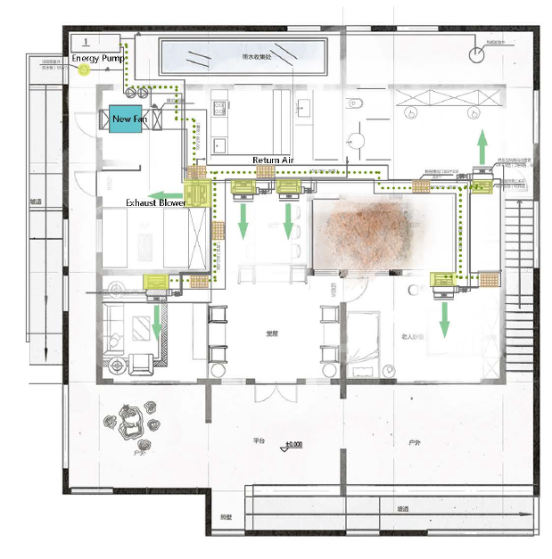
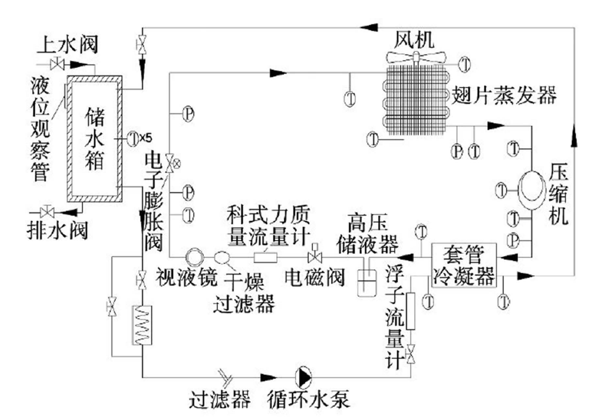

Water Usage
Strategies and Methods
• A grey water and rain water irrigation systems are used to recycle water to benefit
the house.
• Rain water collects at the North side of the house and filters to the garden and
courtyard, to water the plants in the court yard and south side of the house.
• Grey water is collected in the North East corner of the house from the sinks and
shower pipes and then filtered to the rainwater collection where it is also distributed
to the house plants.

Water Usage
Significance
• Over time these functions will aid in the conservation and repurpose of thousands
of gallons of water while improving the quality of livening within the home.
• These strategies may influence other housing designs in the future to include a rain
and grey water systems as well as conservative shower heads in efforts to recycle
water efficiently and improving the standards of living within a more versatile home,
ultimately attracting potential buyers.
• Rain and grey water systems within the house can boost the market potential immensely
for it improves aesthetics of effected gardens, plants, and ultimately the
home a whole.
Advantages
Setting up water reusal systems will
effectively use and save limited, valuable,
freshwater resources. These
water reusal systems will also reduce
the amount of pollutants and wastewater
discharged, and can also relieve
the overload phenomenon of
urban sewers. These water reusal
systems have obvious social, environmental,
and economic benefits.

Air Quality
Strategies and Methods
• The house has a 640w electrostatic dust removal heat exchanger which removes fine
particulate matter such as dust and smoke from the air in the house.
• There is a 500w central air conditioning system with six outputs installed throughout
the design of the house. The smart home feature connects with the central air and adj
usts the system based on the weather, humidity, and other situations to assure the be
st quality of living without wasting any extra energy.
• The surplus of windows that open and close throughout the house, also allows for a
large variety of air circulation variables that can regulate air flow and improve air qual
ity according to varying situations.
• Plants are also being suited to the home based on their abilities to best affect the air
quality.
• The smart air conditioning system, the purposeful of greenery, the air purifying syste
m,and ventilation via windows provide the perfect living situation for fresh air circulati
on.
Air Quality and Heating System

Air Purification
This smart home combines
indoor lighting, ventilation,
shading, background
music and other factors to
create a comfortable environment
for indoor personnel
in different situations
under the scenario
switching mode. Simultaneously,
the linkage between
devices is used to
reduce the cumbersome
operations one by one.
Providing a comfortable
environment while providing
great convenience services
to achieve intelligent
goals.
Air Quality and Space Heating
• The mechanical system employs a reversible water-to-water heat pump that provides
hot and cold water to hydronic radiant systems for space conditioning, and provides
all domestic hot water for the home with no backup. When in cooling mode, the
equipment employs a desuperheater to harvest some waste heat for domestic water
heating. The heat pump also utilizes an innovative low-cost in-ground heat exchanger
that costs a fraction of conventional ground-source approaches, and which recovers
heat from greywater.
• Grey water from the home flows around the outside of these heat exchangers, increasing
thermal conductivity year round, and augmenting the effective ground temperature
in the winter.
Performance Analysis of Heating System

Market Effect
• AII these conservative approaches are innovative in the sense that they would not
be implemented into an average home but elevate the average quality of living
while saving energy and aiding the environment in a beUer tomorrow.
New, Unique or Atypical Technologies
• In order for the house to stand alone it collects its energy from four 1956x992x40
mm solar pannels.
• The information base for the indoor personnel is adequate to facilitate the use of
appropriate electrical equipment for adjustment, thereby reducing energy consumption
and reducing peak power usage. This allows families to understand their
own home.
Social, Cultural and Commercial Potential
• The solar panels not only eliminate the electric bill, but it is also a renewable eco
friendly way to power the stand alone house.
• The 10ft has a video intercom system set up to facilitate the elderly to observe
and contact the grandchildren. This not only retains the child' s curiosity but also
satisfies the convenience of the elderly.
Innovative Approaches
• The smart home assists in an energy friendly task controlled convenient, and
comfortable living environment.
• The rain and grey water systems reuse water to benefit the house as well as indirectly
benefiting the homes air quality system and aesthetics given that these systems
support the plant life of the home.
• The multi function heat pump provides a cost effective year round heating and
cooling system.
• The central air system is also cost effective and power friendly in the sense that it
will save money and energy by turning off when air quality is perfect for living, or
if no one is in the room.
Impact the Livability
• The smart home is based on a residential building. It integrates the facilities related
to home life using integrated wiring technology, network communication
technology, security technology, automatic control technology, and audio and
video technology, and builds an efficient management system for residential facilities
and family schedule affairs. Home safety, convenience, comfort, artistry, and
environmental protection and energy-saving living environment.
• The smart home focuses on comfort and convenience (Reducing human labor
and creating atmosphere intelligently).
• This home combines indoor lighting, ventilation, shading, background music and
other factors to create a comfortable environment for indoor personnel in different
situations under the scenario switching mode. Simultaneously, the linkage between
devices is used to reduce the cumbersome operations one by one. Providing
a comfortable environment while providing great convenience services to
achieve intelligent goals.
• The smart home has an intelligent monitoring system (power flow and clear
energyallocation).
• The intelligence of the home is also reflected in the information that can be informed
to the inside of the room but unknown, in order to maximize the value of
the data in all aspects of the family, and lay the foundation for follow-up measures.
• The smart home system uses electric energy as an entry point, and uses smart
devices to monitor and count the energy consumption that cannot be seen on
weekdays. It is also displayed in a graphical manner to indoor personnel to make
electricity transparent and energy-consumption details.
• The smart home is also compatible with elderly (can focus on the lives of the elderly
and care for the elderly). This Smart home system has great flexibility and
practicality in targeting specific groups of people, and is even more intelligent in
its ability to act or feel inconvenient.
• "the small 10ft of the grandfather' s home" fully considers the living habits of
the elderly in equipment layout, such as installing self-sensing night lights, setting
emergency alarm devices, etc.
• To reduce unnecessary risk factors, the house has a 10ft that children can e 时oy.